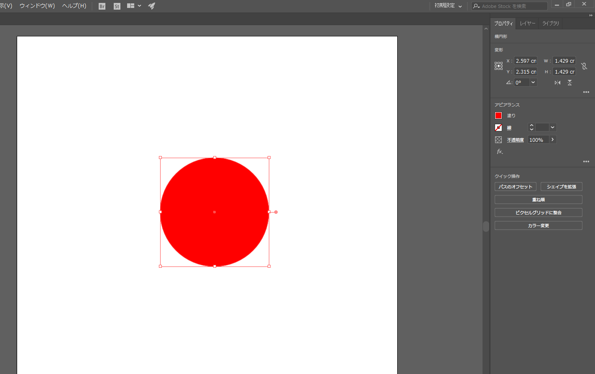
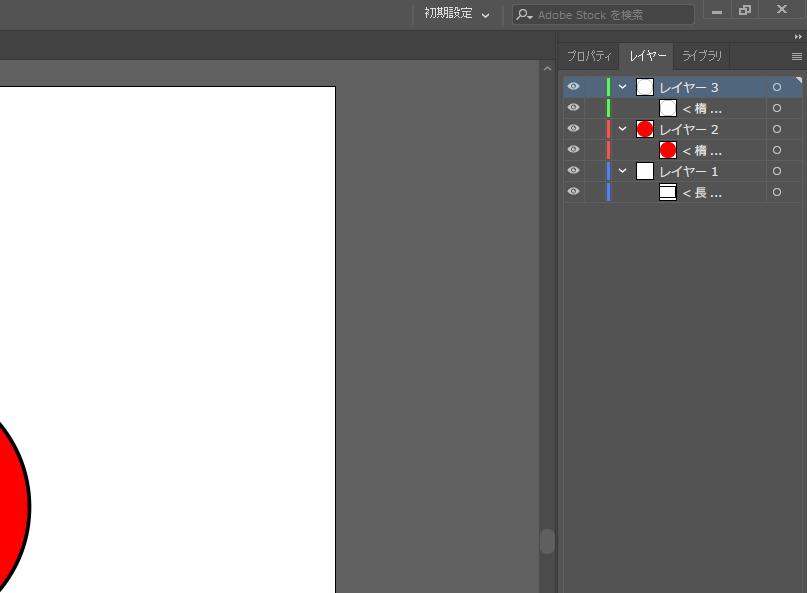

今回は簡単なデータを作り、印刷データを作成する。
UVプリンターは様々なメディアで印刷することが出来る
しかし、メディアに対して綺麗に印刷するためには印刷するデザインと共に「枠」を作り、セットできる準備をしなければならない
１．イラストレーターをを起動する。
2.今回は、新規作成から縦、幅を5センチに設定して作成する。
３．右側の「レイヤー」から「新規レイヤー」を2つ作成。

 。
。
４．左の項目等を使ってデザインを作成してください。
５．「レイヤー2」の中には赤い丸が入っています。
６．〇をコピー→「貼り付け」でもう1つ〇を作り、赤丸にかぶせる。
「レイヤー3」に先ほどの枠をいれます
８．最後に、〇を覆うように色、線：色なしの見えない□を作りました。
これを「レイヤー1」に入れる。
９．3つのレイヤーに1つずつデータがある状態になります。
レイヤー3「枠」を見えない状態にして保存する（名前：「赤丸」）

＊保存する場合は「EPS」で保存する

次にレイヤー2「赤丸」を見えない状態にして同様に保存する。（名前：「枠」）

 ～UVプリンター起動編＆印刷編～
UVプリンターを使用するにために必要な康がある。他の印刷機と違い様々なメディアに印刷できるため「高さ」の調整が必要なのである。
また、印刷をする「場所」を確定するために2回の印刷をする
また調節しないとUVプリンターのノズル？が壊れる可能性があるのでかなり重要である。
＊修理に結構な￥がかかるらしい…
UVプリンターを起動する
初回印刷時
はじめに、メディアのセットする「場所」を確認する。
＊以前、用意した2つのデータを利用済ます
～セット
起動したら「SETUP」を押す
「メディアをセットしてください」と表示されたら右ボタンを押し「ジドウケンシュツ」にセット
「ENTER」を押すと自動的に台座のみの「高さ」に台座が移動します。
～UVプリンター起動編＆印刷編～
UVプリンターを使用するにために必要な康がある。他の印刷機と違い様々なメディアに印刷できるため「高さ」の調整が必要なのである。
また、印刷をする「場所」を確定するために2回の印刷をする
また調節しないとUVプリンターのノズル？が壊れる可能性があるのでかなり重要である。
＊修理に結構な￥がかかるらしい…
UVプリンターを起動する
初回印刷時
はじめに、メディアのセットする「場所」を確認する。
＊以前、用意した2つのデータを利用済ます
～セット
起動したら「SETUP」を押す
「メディアをセットしてください」と表示されたら右ボタンを押し「ジドウケンシュツ」にセット
「ENTER」を押すと自動的に台座のみの「高さ」に台座が移動します。